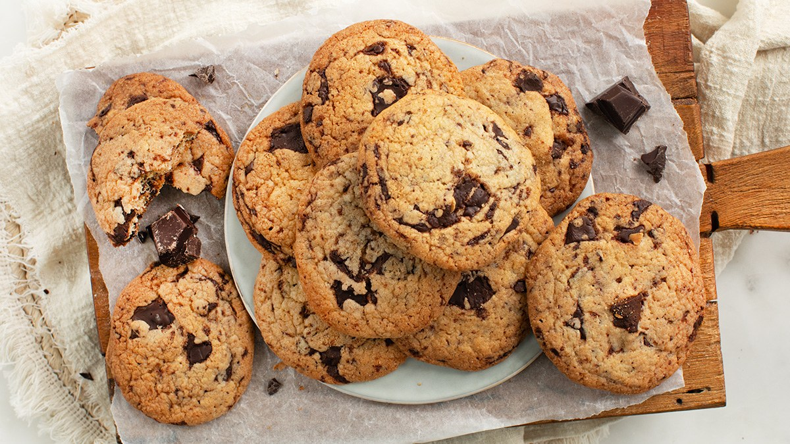

Chocolate Chip Cookies

Description
Chocolate chip cookies are a classic treat loved worldwide. First created in the 1930s by Ruth Wakefield, they feature a buttery dough filled with semi-sweet chocolate chips, balancing crisp edges with a soft centre. Over time, many variations have emerged, including versions with dark chocolate, nuts, or sea salt.
These cookies bring comfort and nostalgia, whether fresh from the oven or enjoyed as a quick snack. Their irresistible aroma makes any space feel warm and inviting. With bakeries and cafes offering unique twists, chocolate chip cookies remain a timeless favourite.
Ingredients
- 2 1/4 cups all-purpose flour
- 1/2 teaspoon baking soda
- 1 cup unsalted butter, room temperature
- 1/2 cup granulated sugar
- 1 cup packed light-brown sugar
- 1 teaspoon salt
- 2 teaspoons pure vanilla extract
- 2 large eggs
- 2 cups semisweet and/or milk chocolate chips
Instructions
- Preheat oven to 350 degrees. In a small bowl, whisk together the flour and baking soda; set aside. In the bowl of an electric mixer fitted with the paddle attachment, combine the butter with both sugars; beat on medium speed until light and fluffy. Reduce speed to low; add the salt, vanilla, and eggs. Beat until well mixed, about 1 minute. Add flour mixture; mix until just combined. Stir in the chocolate chips.
- Drop heaping tablespoon-size balls of dough about 2 inches apart on baking sheets lined with parchment paper.
- Bake until cookies are golden around the edges, but still soft in the center, 8 to 10 minutes. Remove from oven, and let cool on baking sheet 1 to 2 minutes. Transfer to a wire rack, and let cool completely. Store cookies in an airtight container at room temperature up to 1 week.
- Enjoy your delicious chocolate chip cookies!
Back to Home